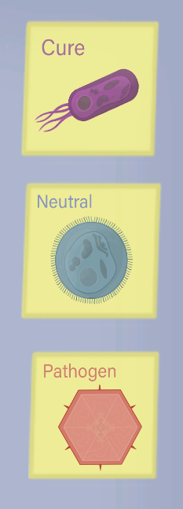

Game Developer Portfolio
Antidote Development Process
After 5 months of development in this project, the team had to be divided and directed to work from home because of COVID-19. The project development ended shortly after with the graduation of the team lead designer.
About the game: Antidote is a cure finding game where the player is a scientist trying to manufacture a cure for a pathogen. The game mechanics involves the player trying different stats in the lab and taking notes on what is most effective to kill the pathogen without killing too many neutral cells.
Overview:
This page will cover the following topics:
- Cell Behaviors in C#
- Flocking cells behavior
- The Gameplay, and other Unity implementations

Info
Platforms: PC
Project Length: 5 months
Engine, Tools, and Language: Unity, Github, C# Visual Studio
Cell Behaviors
Antidote has a total of 3 cells:
- Pathogen: cells that are bad for you, and the goal is to kill them all
- Neutral cells, or bodily cells: Cells that represent the human body cells
- Cure: Cells that the player can modify to create an effective cure against pathogen cells
All the cells previously stated have the same properties:
- Health
- Stamina
- Aggression
- Reproduction rate
These cells react in a different ways when in proximity to their friends and foes. These reactions were discussed between the team member and addressed as rules or behaviors

Cell recovering health and stamina meeting requirements for reproduction
All cells present in the game
Rules are a simple set of statements that handles what happens between the cells despise of their stats, supporting the behaviors they could switch to.
Cells rules:
- Cells are always consuming stamina, if stamina runs out, they will consume Health instead
- Killing an enemy cell gives Heath in the form of food (support “Aggressive” behavior).
- Cells that are modified by the player, by default, will not attack the neutral cells unless they are too aggressive (support “Last Stand” behavior)
- If a cell is touching an opposing cell, example pathogen and neutral, they will both make a check against their aggression to see if they do damage to the other
- If a cell is in proximity to a cell of the same type, example pathogen and pathogen, then there is a chance to create another cell by consuming stamina and checking the reproduction rate. If the random chance to reproduce matches or is below the reproduction rate the cell will consume an amount of stamina to create a new cell (support “Flee” behavior)

Blue cells switch from Aggression to Flee/Flocking
Behaviors are states on which a cell can be in or switch to after doing a randomized roll check against their own stats.
Cells behaviors:
- Aggressive behavior: If a cell HP is below their aggression, that cell will hunt other opposing cells with extra speed to try to survive. Cells with high aggression are called hunters, and cells with low aggression are called passive.
- Flee and reproduce: Cells that are full in HP and have a high number in reproduction will flee from battles and flock with similar cells to try reproducing, making a stronger flock.
- Last Stand: Cells that are modified by the player, if their aggression is too high, can hunt neutral cells instead of pathogen cells to try to survive for longer.

Cells switch from flocking to Aggressive behavior after Reproduction
The fun of Antidote is to explore the DNA helix with different colors to take notes on what the color represents and how they affect the cells behaviors during the game. After exploring what the cells can do and what the colors mean, the player can control exactly how to build their cure and beat the pathogen with the lowest amount of consumption, or casualties, of neutral cells to do so.
Flocking cells behavior
The cells are following each other with the flock system, and hunting other cells with A* pathfinding
Since I was the main programmer for the project and I was only at my junior year at college, I decided to follow a tutorial that could help me understand and implement the flock behavior for the project.

Alpha gameplay of both navigation systems running
After solving a few bugs between the systems, the implementation that switches between behaviors proved that they could co-exist and operate in a way that would simulate the actions of a cell.

Cells flocking with their own kind
The Gameplay, and other Unity implementations
The DNA Helix Selection
There are a total of 4 different factors that can affect the cell. Initial Health, static aggression, static reproduction rate, and number of cells that will spawn at the beginning of the test.
The DNA helix in the game has a total of 5 slots for possible combinations, as well as 5 different colors for the player to pick from. If the player decides to go with red, yellow, red, blue, red, then that array of 5 colors will be compared to the array of correct combinations.
The system initiates the game by picking one of the stats, for example initial health, and generating an array of 5 randomized combination of color. Those 5 colors if are fully matched, they will give the player’s cell a total of 100% initial health bonus. This process is done for every stat needed.
For every correct match that the player does, the cells are rewarded with 20% additional points for that status.
If the player guesses Blue at position 2, however, in the correct combination for initial health blue happens to be at position 4, the player is rewarded with half of the bonus a full match would give, or 10%.

Helix DNA selection
DNA Helix percentage example:
- Correct sequence for Initial Health
- P1: Red, P2: Green, P3: Red, P4: Blue, P5: Yellow
- Player’s initial guess
- P1: Red, P2: Blue, P3: Black, P4: Black, P5: Black
Red at position 1 gives 20% because it matches the right position, P1, and the right color, Red.
Blue at position 4 gives 10% because it is a correct guess, the color blue is present in the player's guess, but not in the right position.
A bonus of 30% will be granted to the player's initial health cells.
This system was designed for game designers to have control over what type of combinations they would like to make for players to explore in future levels against other pathogens. The randomization was implemented in the prototype as a way to play with the system and test how fun the game can be.
Other Unity implementations I made:
- Added UI and programmed the backend for player interaction in the HUB menu
- Implemented art and animation for the cells using the base Unity animation system
- Implemented selection screen for doctors that can give extra bonus for cells, or hints in what color to pick for a better effect in one of the 4 main statuses.
Office Hub Menu
- Added scene manager to jump between scenes
- Added art for the Title screen and UI
Title Screen